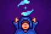

Glück
Glück  beeinflusst weitreichende Teile des Spiels, wie beispielsweise die Erscheinungswahrscheinlichkeit von Geoden oder Schatztruhen beim Fischen.
Es gibt mehrere Arten von Glück: Tägliches Glück das vom Spiel gesetzt wird, Attributsboni von Gekochtem, das Besondere Amulett was einen kleinen, permanenten Bonus gibt, und der Glücksring .
beeinflusst weitreichende Teile des Spiels, wie beispielsweise die Erscheinungswahrscheinlichkeit von Geoden oder Schatztruhen beim Fischen.
Es gibt mehrere Arten von Glück: Tägliches Glück das vom Spiel gesetzt wird, Attributsboni von Gekochtem, das Besondere Amulett was einen kleinen, permanenten Bonus gibt, und der Glücksring .
Tägliches Glück
Der Basiswert für das tägliche Glück ist eine zufällig generierte Zahl zwischen -0.1 (Pech) und 0.1 (Glück)[1], die durch das Besondere Amulett um 0.025 erhöht wird. Der Wert wird auf verschiedene Weise verwendet; obwohl er wie ein Prozentwert von 10% aussieht, wird er tatsächlich in jeder Situation anders behandelt und kann je nach Aktivität eine geringe oder große Wirkung haben.
Du findest das Glück für den aktuellen Tag heraus, indem du das Wahrsagerprogramm beim Fernseher auswählst. Dieser gibt dir einen Hinweis auf den heutigen Glückswert in Textform.
Tägliches Glück wird zu Beginn des Tages gesetzt und wird nicht davon beeinflusst, ob du dir das Wahrsagerprogramm ansiehst. Das tägliche Glück ist also nicht neutral, nur weil du das Programm nicht angesehen hast, und steigt und sinkt dem zur Folge auch nicht.
Das tägliche Glück ändert sich nicht, wenn du den Spielstand neu lädst und damit den Tag neustartest. Es kann sich aber ändern, wenn der vorherige Tag neu gespielt wird.
| Angezeigter Text | TV-Bildschirm | Tägliches Glück [2] |
|---|---|---|
| Die Geister sind heute sehr glücklich! Sie werden ihr bestes tun, um jedem mit Glück zu überhäufen. | 
|
|
| Die Geister sind heute gut gelaunt. Ich denke du wirst etwas extra Glück haben. | 
|
|
| Die Geister sind heute neutral. Der Tag liegt in deinen Händen. |  | |
| Das ist selten. Die Geister fühlen sich heute absolut neutral. | ||
| Die Geister sind heute etwas genervt / fühlen sich leicht gestört. Das Glück wird nicht auf deiner Seite sein. | 
|
|
| Die Geister sind heute sehr unzufrieden. Sie werden ihr bestes geben, um dir dein Leben schwer zu machen. | 
|
Besonderes Amulett
Nachdem man die Geheime Notiz #20 gelesen und das Rätsel gelöst hat, bekommt man ein Besonderes Amulett, welches das tägliche Glück permanent um 0.025 erhöht.
Effekte des täglichen Glücks
Das tägliche Glück beeinflusst folgendes:
Minenarbeit
- Wahrscheinlichkeit, Leitern in den Minen zu entdecken
- Wahrscheinlichkeit, dass beim Abbauen eines Steins zusätzlich Kohle oder eine Geode gedroppt wird
- (-->Aber: Das tägliche Glück beeinflusst die Wahrscheinlichkeiten fürs Erhalten der Gegenstände aus Geoden nicht!)
- Wahrscheinlichkeit, Schatzräume in der Schädelhöhle zu finden
- Wahrscheinlichkeit, in den Minen oder Schädelhöhle eine Edelsteinader oder Mystischen Stein zu finden
- Menge an Gold und Gegenständen die man verliert, wenn man in den Minen oder Schädelhöhle stirbt
- Wahrscheinlichkeit, dass man eine Radioaktive Ader findet[3]
- Minen, wenn Schrein der Herausforderung aktiv ist
- Schädelhöhle, wenn Invasion der Schädelhöhle aktiv ist
Sonstiges
- Wahrscheinlichkeit, dass beim Ernten mehr als normal droppt
- Funktioniert für jede Nutzpflanze, ein einzigartiger "dwoop"-Ton wird dann abgespielt [4]
- Anzahl der gedroppten Holzstücke beim Fällen eines Baumes
- Qualität & Anzahl der Gegenstände, die in der Kupferpfanne landen
- Wahrscheinlichkeit, dass man zwei unterschiedliche Items bei der Suche nach Erzen in der Kupferpfanne erhält
- Dropwahrscheinlichkeiten für Entenfedern und Hasenpfoten
- Die Wahrscheinlichkeit, mehr oder weniger gute Gegenstände (oder überhaupt einen) aus Mülleimern zu erhalten
- Die Wahrscheinlichkeit, dass ein Ehepartner eifersüchtig wird, nachdem man einem anderen Ehekandidaten ein Geschenk gemacht hat, während man diesen ebenfalls datet
- Wahrscheinlichkeit, dass eine Truhe beim Fischen auftaucht
- Wahrscheinlichkeit, darin Besondere Gegenstände (z.B. Neptuns Gleve, Prismatische Scherbe, Iridiumband) zu finden
- Das Glück beim Kasino
- Anzahl der Blitze während eines Sturms (höheres Glück --> weniger Blitzeinschläge)[5]
- Wahrscheinlichkeit, dass ein Baum vom Blitz getroffen wird (höheres Glück --> niedrigere Chance)[5]
Attributsboni
Zusätzlich zum täglichen Glück (s.o.) kann man temporäre Attributsboni von Gekochtem bekommen. Es kann immer nur ein Getränke-Bonus und ein Essens-Bonus gleichzeitig aktiv sein.
Folgende Gerichte geben einen solchen Glücksbonus:
| Bild | Name | Beschreibung | Zutaten | Energie / Gesundheit | Buff(s) | Buffdauer | Rezeptquelle | Verkaufspreis | |||
|---|---|---|---|---|---|---|---|---|---|---|---|
| Glücksmahlzeit | Eine besondere kleine Mahlzeit. |
|
|||||||||
| Gebratener Aal | Fettig, aber schmackhaft. |
|
|||||||||
| Würziger Aal | Er ist richtig scharf! Sei vorsichtig. |
|
|||||||||
| Kürbissuppe | Beliebt im Herbst. |
|
|||||||||
| Krabbencocktail | Eine üppige Vorspeise aus frisch gefangenen Garnelen. |
|
|||||||||
| Ginger Ale | Eine pikante Limonade, bekannt für seine beruhigende Wirkung auf den Magen. | Zwergenshop im Vulkan auf Ingwerinsel ( |
|||||||||
| Bananenpudding | Ein cremiges Dessert mit einem wunderbaren tropischen Geschmack. |
|
|||||||||
| Magischer Bonbon | Ein seltenes und kraftvolles Bonbon, das mit der Essenz des prismatischen Splitters angereichert ist. | N/A | N/A |
Folgende Ringe geben einen Glücksbonus:
| Bild | Name | Beschreibung | Effekte | Fundort | Zutaten | Preis | Verkaufspreis |
|---|---|---|---|---|---|---|---|
| Glücksring | Das Mond-Emblem soll demjenigen, der es trägt, Glück bringen. | Erhöht |
Schädelhöhle (als Spezieller Gegenstand), selten mit Kupferpfanne. | N/A | N/A |
Effekte der Glücksboni
Der gesamte Glücksbonus wird getrennt vom gesamten täglichen Glück behandelt, und die Auswirkungen der beiden Glücksarten sind nicht immer dieselben; sowohl die Art der Ereignisse, auf die sich der Glücksbonus auswirkt, als auch das Ausmaß des Effekts können unterschiedlich sein.
Bekannte Unterschiede sind:
- Wahrscheinlichkeit, Entenfedern oder Hasenpfoten zu bekommen sind durch Glücksbonus nicht erhöht
- Inhalt von Schatztruhen beim Fischen: ein Glücksbonus erhöht nur die Chance auf doppelte Mengen der Gegenstände/Ressourcen, sowie die Chance auf normale Ringe (Leuchtring, Magnetring) statt kleinen Ringen (Kleiner Leuchtring, Kleiner Magnetring)
- Beim Abbau von Steinen wird die Wahrscheinlichkeit für zusätzliche Schlackenscherben, Knochenfragmente, Lehm, Steine und alle Erze vom Minenarbeit-Level und dem Glücksbonus beeinflusst, nicht vom täglichen Glück[6]
- Kritische Chance wird vom Glücksbonus erhöht, aber nicht vom täglichen Glück[7]
- Wahrscheinlichkeit, dass sich der Ring von Yoba[8] oder Kriegerring[9] aktivieren, werden vom Glücksbonus erhöht, aber 'nicht vom täglichen Glück
- Wahrscheinlichkeit, dass Monster spezifische Gegenstände droppen (z.B. Mahagoni-Samen, Galaxieseele, Qi Edelstein), wird vom Glücksbonus erhöht, aber nicht vom täglichen Glück[10]
Geschichte
- 1.3.27: Fügt das Besondere Amulett offiziell dem Spiel hinzu. Fügt der Schädelhöhle Schatzräume hinzu, die von Glück beeinflusst werden.
- 1.4: Führt das Magische Bonbon ins Spiel ein. Der Bonus vom Besonderen Amulett wird auf statische 0.025 gesetzt. Der Ehepartner wird nun nur noch neidisch wenn man die beschenkte Person auch gerade datet.
- 1.5: Fügt Ginger Ale, Bananenpudding und den Glücksring hinzu.
References
- ↑ Siehe: Game1::_newDayAfterFade im Spielcode.
- ↑ Siehe: Objects.TV::getFortuneForecast im Spielcode.
- ↑ Siehe: Locations.MineShaft::chooseStoneType im Spielcode.
- ↑ Siehe: Crop::Harvest im Spielcode.
- ↑ 5,0 5,1 Siehe: Utility::performLightningUpdate im Spielcode.
- ↑ Siehe: StardewValley.GameLocation::breakStone im Spielcode.
- ↑ Siehe: StardewValley.GameLocation::damageMonster im Spielcode.
- ↑ Siehe: StardewValley.Farmer::takeDamage im Spielcode.
- ↑ Siehe: StardewValley.Objects.Ring::onMonsterSlay im Spielcode.
- ↑ Siehe: StardewValley.GameLocation::monsterDrop im Spielcode.
| Fähigkeiten & Werte | |
|---|---|
| Fähigkeiten | Hofarbeit • Minenarbeit • Sammeln • Fischen • Kampf |
| Werte | Angriff • Geschwindigkeit • Gewicht • Glück • Immunität • Kritische Chance • Kritische Kraft • Magnetismus • Verteidigung |